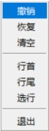
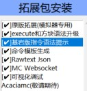

软件使用
本调试程序需要与 MT管理器，浏览器 组合使用才可以完整体验所有功能。
如果你有其他文本编辑器可以替代MT管理器，可以直接跳过本段内容。如果你还没有下载MT管理器，可以点击链接进行下载。
MT管理器下载：点击下载
本调试程序只涉及点击和输入文字操作。
如果安卓用户执意多次执行返回操作，
将会直接关闭此调试程序。注意：这不是刻意的设计，而是Pydroid 3在程序运行下的自身设定。
界面操作栏
进入调试程序主界面，最下方的界面操作栏，可以在不同界面中分别切换，菜单按钮除外。
图1是窗口切换，你可以在游戏界面、拓展包选择界面、拓展包窗口界面、设置界面中分别切换。可以花一些时间对这几个界面进行熟悉。

图2是为文字输入而单独设计的功能按钮，适用于本程序所有的文本输入框。设计这些按钮的原因是因为安卓用户的Pydroid
3无法直接使用输入法中的这些功能，所以需要额外设计的按钮进行支持。
拓展包

拓展包的平台都是第三方拓展包。第三方拓展包为命令模拟器附加的服务，使用第三方拓展包需要注册命令模拟器的账户，
并在官网选购拓展包，拓展包将会根据未来用户的反馈进行更新。第三方拓展包并不是只由命令模拟器作者进行开发，
未来可能有拓展包开发者对自己的拓展包进行定价，请各位用户尊重拓展包开发者的著作权。
第三方拓展包有启动和重启两个开启方式。如果点击启动，则将恢复用户上一次对该拓展包内容的修改，
如果点击重启，则销毁上一次的修改重新启动拓展包。
注意：由于拓展包是贴近python代码进行开发，请不要安装未知的第三方拓展包。
安装第三方拓展包造成的设备损害，开发者将不对此进行负责。
本地文件存储
命令模拟器的世界储存和源代码位于同一目录位置。
Windows的本地文件储存在用户自己选择的文件夹目录。
Android的本地文件需要用户需要在MT管理器中，点击最上方路径栏，跳转至/storage/emulated/0/Android/data/ru.iiec.pydroid3(
点击复制)
如果是Android 13系统则需要按照MT管理器授权或下载Shuziku。
进入该目录，在此目录下有files文件夹，命令模拟器本地文件就储存于此。
用户可以在MT管理器中点击右上角菜单，对此目录设置首页或添加书签以方便下一次寻找该目录。
本地网站
命令模拟器在启动时会自动搭建一个本地服务器，这个服务器将服务于命令模拟器中的重要功能，例如命令的语法错误反馈信息。
并且你所阅读的帮助文档服务也由该本地服务器提供。
命令模拟器的本地服务器地址为: localhost:32323。
注意：安卓用户使用的Pydroid 3在切至后台会导致本程序暂停运行，
本地服务器也会因此暂停运行。解决方法：将前台进程切换Pydroid 3后，返回浏览器即可正常工作。
文字输入和操作
命令模拟器使用tkinter UI库进行搭建，因此很多文字操作功能无法直接在安卓和Windows中同时进行兼容。
命令模拟器中的撤回和恢复操作需要界面操作栏中的菜单按钮进行撤回和恢复。
在安卓平台，命令模拟器中的输入框同样也不支持输入法中提供的全选、复制、剪切、粘贴功能，
需要依靠快捷操作菜单中的按钮进行支持。
部分安卓用户由于输入法差距，换行也无法使用，快捷操作菜单中的按钮也支持换行。
文本操作菜单
如果用户在输入框中，在输入框中进行缓慢的拖动操作，即可选中输入框内的文字。这时会显示文本操作菜单1，如上图所示。
点击对应菜单即可执行对应的操作。
如果用户在输入框中，对同一位置进行多次缓慢的点击，即可显示文本操作菜单2，如上图所示。
点击对应菜单即可执行对应的操作。
用户登录
命令模拟器的用户登录主要是为拓展包而服务的。拓展包的下载需要在服务器中验证用户是否拥有拓展包，
如果用户想拥有拓展包，需要在命令模拟器官网中购入。
如果没有账号，也可以在官网进行注册。
右键菜单
命令模拟器支持右键菜单，现在为止右键菜单支持MC所有字符的复制，以及复制MC内各种项目的ID。
Windows用户使用鼠标右键即可唤出右键菜单，安卓用户需要长按命令模拟器界面2秒，才可以唤出右键菜单。
批量复制字符
用户可通过官网网站查询需要的文字对应的Unicode编码。
在输入框输入的合法Unicode编码可添加收藏，并供下一次快速寻找与复制。
查询游戏内ID
在搜索框中输入关键词即可搜索各类ID，现支持物品，方块，实体，群系，伤害，药效，附魔，槽位，迷雾，规则，结构，掉落，声音，配方
复制文件命令
在main.py所在的目录下，文件夹functionality内有一个名为command的文件夹，该文件夹支持读取.txt .mcfunction文件和子文件夹的文件。
软件会自动去除空行，并给用户提供小窗口下的命令复制功能。通常适用于将文件命令转移到命令方块内。
注意：如果你使用title命令显示的信息里有多行显示，请注意补充手动补充内容！！！！
软件更新
命令模拟器在服务器查询到最新版本时会提醒用户是否需要更新。
安卓用户需要在main.py所在的目录，寻找update.py文件，使用Pydroid 3打开文件后，运行文件即可更新。
Windows用户在根目录需要寻找 Windows更新.bat 文件，双击运行后即可更新。如果用户误删除了程序的重要文件，也可以通过更新来进行恢复。